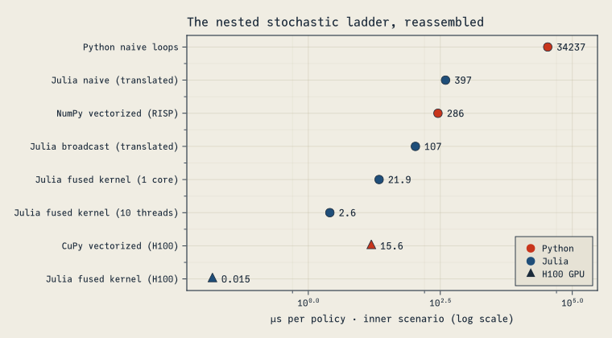

Reworking the SOA’s open-source VA valuation, where the fastest implementation turns out to be the one that looks like the specification
JuliaActuary is an ecosystem of packages that makes Julia the easiest language to get started for actuarial workflows.
modeling
benchmark
code
autodiff
blog
Author
Alec Loudenback
Published
July 31, 2026
“The computational structure of a NSM has been the elephant in the room over the past few years. While we were all busy talking about the different approximation methods to avoid a true brute force NSM, it’s easy to lose track of the more fundamental question: how to set up an efficient computational algorithm for an NSM?” — Victoria Zhang, Discussion of Efficient Computational Structure of Nested Stochastic Modeling (SOA, 2021)
Nested stochastic projection is the honest way to value path-dependent guarantees: an outer loop of real-world scenarios walks the business forward, and at every future node an inner loop of risk-neutral scenarios values the embedded options. It is also famously expensive. For a 190,000-policy variable annuity block with 1,000 outer and 500 inner scenarios projected quarterly over 30 years, the 2021 SOA research paper quoted above counts about \(10^{13}\) path valuations and estimates that a naive implementation would take decades of compute.
Most published research escapes this by approximating — cluster the policies, reduce the scenarios, regress a proxy for the inner loop. The SOA paper takes a different and, I think, more interesting position: before approximating anything, get the computational structure right. Its open-source Python implementation climbs a ladder of structural rungs, each intended to preserve brute-force numbers exactly:
Vectorize with NumPy — replace Python loops with whole-portfolio array operations (~50X in the paper’s microbenchmark),
Reverse Inner Switch Points (RISP) — reuse the shared real-world prefix of every inner path, halving the step count,
Swap NumPy for CuPy — run the same array code on an NVIDIA GPU (another ~9–18X at scale).
That thesis — structure beats approximation, and you shouldn’t have to trade accuracy for speed — deserves to be taken seriously. This post takes it one language further. I reimplemented the paper’s model in Julia three ways: a line-by-line translation of the naive loops, a line-by-line translation of the NumPy broadcasting version, and then the implementation the paper’s ladder is reaching toward but can’t express in NumPy — a fused, seriatim kernel where each policy’s whole nested projection runs in registers and cache. All four implementations (and the original Python) are validated against each other on the same data — path-level matrices on representative policies, whole-block aggregates, and engineered edge cases — to near machine precision.
Three questions drive the comparison, and they get concrete answers:
Cleaner? The fused Julia kernel is about 40 lines and reads like the model’s specification. It is the fast implementation — there is no second, vectorized dialect to maintain.
Faster? On the same laptop, per policy and inner scenario: the fused kernel is ~13X faster than the completed NumPy implementation on one core, and ~110X faster using the machine’s cores. The full 190K × 1,000 × 500 problem extrapolates to months (NumPy) versus days (Julia) — before any GPU is involved.
More generic? The same kernel runs with dual numbers flowing through it: pathwise AD sensitivities — both partials at once — for roughly the cost of one extra valuation, no rewrite. It is number-type- and accelerator-generic: the same step, moved to a rented H100, ran the paper’s entire “560-day” configuration in 24.8 measured minutes and beat CuPy on the same silicon by ~1,000X per unit of work.
The results, first
If you take one thing away, take this figure. Each point is one implementation of the same model producing the same validated numbers on the same data. Across is speed: the cost of one policy × one inner scenario across all 120 switch points, whole-portfolio workload. Up is code: the gzipped size of the source that expresses that rung, measured live at render from this post’s own cells and the pysrc/ and gpu/ bundles. The gray annotations scale each point’s rate to the paper’s full 190,000-policy × 1,000 outer × 500 inner problem — down and to the left wins:
Headline chart: code sizes measured live (strip comments, gzip -9); timings from the benchmark cells below and gpu/results/
Figure 1: The ladder in one view — runtime per policy · inner scenario against gzipped source of each rung (state, setup, stepping, and valuation driver; comments stripped; measured live at render — details in Table 3). Circles: Apple M4 Max. Triangles: rented Lambda H100. Gray annotations scale each rate to the paper’s full 190,000 × 1,000 × 500 problem, extrapolated linearly per Table 5 — except the H100 kernel, which ran the whole thing, measured, in 24.8 minutes. Timings here are authoring-time measurements, rounded; each laptop number is re-measured live in the sections below.
Three facts qualify the chart. Every implementation produces the same numbers — path-by-path to ~1e-11 against the original Python, and across whole-block aggregates and engineered edge cases to ~1e-14 (the validation table). The entire vertical axis spans ~1.0–1.9 KB of compressed source while the horizontal one spans nearly seven orders of magnitude — the expensive-looking implementations are design effort, not code volume, and the biggest single win is the fused kernel doing less work (stopping each policy at its own maturity), not exotic tuning: per unit of work actually done, the array implementations stay within ~1.3–3.6X of it. And the two triangles are one story, not two: the CuPy triangle is the paper’s third rung run faithfully on an H100, while the fused-kernel triangle — the same ~40 lines that read like the model specification, deliver pathwise AD sensitivities, and compile to Float32 — ran the paper’s entire “560-day” configuration in 24.8 measured minutes, ~1,000X more work per second than CuPy on the same GPU.
The rest of the post is the receipts.
The model, briefly
The reference model values a block of variable annuities carrying three guarantee riders. Writing \(t = 0, 1, \dots, 120\) for quarterly steps over 30 years:
Each policy allocates across 10 investment funds. Each quarter, fund balances grow with mapped index returns, then shed asset fees and any guaranteed withdrawals (taken pro-rata across funds, floored at zero).
A benefit base ratchets up to the account value each quarter (for policies not yet withdrawing) or amortizes down by withdrawals (for those that are).
GMWB: when the contractual withdrawal exceeds the account value, the writer pays the shortfall. GMDB: on death, the writer pays the excess of the guarantee base over account value. GMMB: at policy maturity, the writer pays the terminal excess.
Payouts are probability-weighted with survivorship from a mortality table (using the reference’s decrement conventions, itemized below) and discounted at a flat risk-free rate.
The nesting: along an outer real-world path, every future quarter \(s\) (the switch point) spawns \(N\) inner risk-neutral continuations that value the guarantees as of \(s\). One outer scenario therefore prices \(N \times 120\) paths per policy, where the path for switch point \(s\) follows the real-world returns through quarter \(s-1\) and inner scenario returns thereafter. The output we track is the inner-average guarantee value at each switch point,
which plays the role of the future reserve profile along that outer path — the kind of quantity a nested stochastic run exists to produce. Under this reference model’s semantics and the synthetic scenarios below, read it as a benchmark metric with the shape of a reserve profile, not a bookable reserve.1
I follow the reference implementation’s semantics exactly as coded, including quirks a production model would correct2 — the point of this exercise is computational structure on a fixed specification, not model design. That choice has a labeling consequence used throughout: the outputs here are benchmark metrics under reference semantics, validated across implementations to high precision, rather than actuarially defensible reserves. Where the repo’s two implementations disagree with each other, I follow the naive version and note the difference below.
Data
The paper uses the Gan & Valdez synthetic VA portfolio — 19 product types of realistic synthetic policies — plus scenarios from the American Academy of Actuaries’ generator. The full 190K inforce is no longer readily downloadable, but the authors’ vamc bundle ships a 38,000-policy version of the same portfolio (19 types × 2,000), along with the fund-to-index mapping and the 1996 IAM mortality tables the model expects. That bundle is our data source; scenarios come from a seeded lognormal generator calibrated to the bundle’s own published index statistics (annual means, volatilities, and correlations for 5 indices).3 Everything downloads and regenerates from scratch at render time:
Data preparation: download the Gan–Valdez bundle, derive model fields, generate scenarios
usingDownloads, ZipArchives, CSV, DataFrames, Dates, Random, LinearAlgebra, Statisticsconst DATA =joinpath(@__DIR__, "_data")const VAMC_URL ="https://www2.math.uconn.edu/~gan/datasets/vamc20180422.zip"const VAMC_ZIP =joinpath(DATA, "vamc20180422.zip")isdir(DATA) ||mkpath(DATA)isfile(VAMC_ZIP) ||Downloads.download(VAMC_URL, VAMC_ZIP)archive =ZipReader(read(VAMC_ZIP))zread(name) =zip_readentry(archive, "vamc20180422/demo/InforceValuationSoS/"* name)# Excel serial dates (1900 system)xldate(n) =Date(1899, 12, 30) +Day(n)inforce = CSV.read(IOBuffer(zread("inforce38k.csv")), DataFrame)let cur =xldate.(inforce.currentDate), birth =xldate.(inforce.birthDate), mat =xldate.(inforce.matDate) inforce.AttainedAge = [floor(Int, Dates.value(c - b) /365.25) for (c, b) inzip(cur, birth)] inforce.ProjectionMonths = [12* (year(m) -year(c)) + (month(m) -month(c)) for (c, m) inzip(cur, mat)]end# 1996 IAM mortality from the same bundle, extended so age+30 lookups never fall off the endfunctionread_iam(name) lines =split(String(zread(name)), r"\r?\n") istart =findfirst(l ->startswith(l, "Row\\Column"), lines) +1 pairs = [parse.(Float64, split(l, ",")) for l in lines[istart:end] if occursin(",", l)]Dict(Int(a) => q for (a, q) in pairs)endmale, female =read_iam("1996iammale.csv"), read_iam("1996iamfemale.csv")ages =0:145fill_q(tbl) = [get(tbl, clamp(a, 5, 115), NaN) for a in ages]CSV.write(joinpath(DATA, "mortality.csv"),DataFrame(age=collect(ages), male=fill_q(male), female=fill_q(female)))# fund mapping: 5 indices × 10 fundsfundmap10x5 =Matrix{Float64}(CSV.read(IOBuffer(zread("FundMap.csv")), DataFrame)[:, 2:end])CSV.write(joinpath(DATA, "fundmap.csv"), DataFrame(permutedims(fundmap10x5), ["fund$i" for i in1:10]))# seeded quarterly lognormal scenarios from the bundle's index statisticsstats_lines =split(String(zread("RW/indexStatistics.csv")), r"\r?\n")parserow(l) =parse.(Float64, split(l, ",")[2:6])μ, σ =parserow(stats_lines[1]), parserow(stats_lines[2])C =vcat([parserow(l)' for l in stats_lines[3:7]]...)const RISK_FREE =0.03const T =121# 30 years × 4 quarters + the valuation datefunction gen_scenarios(rng, n, drift) L =cholesky(Symmetric(C)).L σq, μq = σ ./2, (drift .- σ .^2./2) ./4 scen =zeros(n, T, 5) for s in1:n, t in2:T scen[s, t, :] = μq .+ σq .* (L *randn(rng, 5))end scenendrng =Xoshiro(20210731)rw_scens =gen_scenarios(rng, 8, μ) # outer: real-world driftrn_scens =gen_scenarios(rng, 500, fill(RISK_FREE, 5)) # inner: risk-free drift (see the scenario footnote)function write_scen(path, scen) n, _, K =size(scen) df =DataFrame(scenario=repeat(1:n, inner=T), t=repeat(0:T-1, n)) for k in1:K df[!, "idx$k"] =vec(permutedims(scen[:, :, k]))end CSV.write(path, df)endwrite_scen(joinpath(DATA, "scenarios_rw.csv"), rw_scens)write_scen(joinpath(DATA, "scenarios_rn.csv"), rn_scens)CSV.write(joinpath(DATA, "inforce.csv"), inforce[:, [:recordID, :productType, :gender, :AttainedAge, :ProjectionMonths,:gbAmt, :gmwbBalance, :wbWithdrawalRate, :withdrawal, [Symbol("FundValue$i") for i in1:10]..., [Symbol("FundFee$i") for i in1:10]...]])
The prepared CSVs (inforce.csv, mortality.csv, fundmap.csv, two scenario files) are read identically by the Julia code below and by the Python reference scripts, so every implementation consumes byte-identical inputs.
One property of this portfolio matters a great deal later. Policies mature at different dates:
The median policy runs 58 of the 120 projection quarters, and none runs all 120. An implementation that steps each policy only to its own maturity does about 28% of the work of one that marches the whole portfolio across the full time rectangle. Hold that thought.
Shared assumptions in Julia
A handful of small functions used by every Julia implementation — loading, the mortality path construction, fund-return mapping, and discounting — ported directly from the reference code:
usingStaticArraysconst VAL_FREQ =4load_inforce() = CSV.read(joinpath(DATA, "inforce.csv"), DataFrame)load_fund_map() =Matrix{Float64}(CSV.read(joinpath(DATA, "fundmap.csv"), DataFrame))functionload_scenarios(name) df = CSV.read(joinpath(DATA, name), DataFrame) n =maximum(df.scenario) scen =reshape(Matrix{Float64}(df[:, r"idx"])', 5, T, n) [permutedims(scen[:, :, s]) for s in1:n]endfunctionload_mortality() df = CSV.read(joinpath(DATA, "mortality.csv"), DataFrame) qx =Dict{String,Vector{Float64}}()for sex in ("male", "female") v =zeros(146) v[df.age.+1] = df[!, sex] qx[sex] = vend qxend"Quarterly mortality & survivorship from attained age (port of the reference logic)."functionmortality_path(qx_by_age, attained_age, is_male) rate = qx_by_age[is_male ? "male":"female"][attained_age+1:end] rate3 =repeat(rate[1:31] ./ VAL_FREQ, inner=VAL_FREQ)[1:T] rate3[1] =0.0 surv =similar(rate3) surv[1] =1.0for i in2:length(rate3) surv[i] = surv[i-1] * (1.0- rate3[i])end rate3, survendfund_returns(scen, fund_map) =exp.(scen * fund_map) # (T×5)·(5×10) -> T×10 growth ratiosaccum_discount() =exp.(-RISK_FREE / VAL_FREQ .* (0:T-1))qx =load_mortality()fmap =load_fund_map()rw =load_scenarios("scenarios_rw.csv")rn =load_scenarios("scenarios_rn.csv")rw1 =fund_returns(rw[1], fmap);
Reference points: the Python ladder on 2026 hardware
Before comparing languages, it’s worth refreshing the paper’s own numbers on a current machine (Apple M4 Max here; the paper used a 2018-era i7-8850H and an RTX-class GPU). First its Appendix A microbenchmark — apply one quarter’s fund-return ratios (a 10-vector) to every policy’s fund balances (200,000 × 10), 121 times:
# Python — the paper's two CPU rungs (pysrc/microbench.py)for t inrange(num_proj): # naive: loop the policiesfor i inrange(num_inforces): ret = ratios[t] * inforce[i]for t inrange(num_proj): # vectorization & broadcasting ret = ratios[t] * inforce
Table 1: The paper’s Appendix A microbenchmark, then and now. Broadcasting still buys roughly the same ~50–70X over interpreted loops.
variant
paper (2021)
this machine
ratio
Python loop over policies
77.70 µs/policy
36.93 µs/policy
2.1X faster hw/numpy
NumPy broadcast
1.604 µs/policy
0.509 µs/policy
3.2X
CuPy on GPU
0.208 µs/policy
(not run — no CUDA on this laptop)
And the same operation in Julia, executed now:
usingBenchmarkToolsrng_mb =Xoshiro(1)inforce_m =rand(rng_mb, 200_000, 10) .*10_000ratios_m =0.8.+0.4.*rand(rng_mb, 121, 10)inforce_s = [SVector{10,Float64}(r) for r ineachrow(inforce_m)] # one small vector per policyratios_s = [SVector{10,Float64}(r) for r ineachrow(ratios_m)]out_s, out_m =similar(inforce_s), similar(inforce_m)t_loop =@belapsed (for t in1:121, i in1:200_000$out_s[i] =$ratios_s[t] .*$inforce_s[i]end)t_bcast =@belapsed (for t in1:121$out_m .=$inforce_m .*view($ratios_m, t, :)'end)(julia_loop_us_per_policy=round(t_loop /200_000*1e6, digits=3), julia_broadcast_us_per_policy=round(t_bcast /200_000*1e6, digits=3))
The plain Julia loop over policies — the exact structure the paper’s first rung exists to eliminate — runs at about 0.15 µs per policy: ~3X faster than NumPy’s broadcast and faster than the paper’s 2021 GPU figure, on a laptop CPU core.4 That’s the whole story of this post in miniature: vectorization is a workaround for interpreted loops, not a law of nature. The question is what the workaround costs when the model is more than one multiply — and the answer is that it costs structure: extra memory traffic, a forced full-time-rectangle work schedule, and a second dialect of the model.
For the full model, I completed the repo’s unfinished RISP implementation into a clean, allocation-conscious NumPy version (shared step function, guarded divisions, payouts accumulated during stepping — details in pysrc/vectorized.py), and benchmarked both Python rungs on the prepared data. One outer scenario, all 120 switch points, measured per policy · inner scenario:
Table 2: Full-model Python timings on this machine (best of repeated runs, pysrc/bench.py). The naive rung times policies 1–8, whose mean maturity (63 quarters) runs a bit longer than the portfolio’s 58; the Julia naive rung below uses the same eight policies, so cross-language ratios are like-for-like.
Python implementation
config
per policy·scenario
naive loops (pysrc/naive.py)
8 policies × 2 inner
34,237 µs
vectorized RISP (pysrc/vectorized.py)
2,000 × 10
353 µs
vectorized RISP
38,000 × 10
285 µs
Vectorizing the full model buys ~120X here — even more than the paper’s 50X microbenchmark claim, because the naive rung also pays Python-level overhead on the benefit logic, not just the fund multiply.
Rung 1, translated: the naive loops in Julia
The most literal experiment: translate va_calculator_naive.py line by line — same loop nesting, same intermediate arrays, same operation order (array axes flipped for Julia’s column-major layout). The heart of it, for one policy against the 120 merged switch-point paths of one scenario pair:
Nothing clever happened here — this is the same algorithm with the same redundancies (every switch-point path recomputes its full history from \(t=0\)). It is simply compiled instead of interpreted:
inforce_df =load_inforce()rns2 = [fund_returns(rn[n], fmap) for n in1:2]merged2 = [merge_scenarios(rw1, r) for r in rns2]pols8 = [policy_inputs(inforce_df, qx, i) for i in1:8]t_naive_j = (@belapsedsum(sum(va_payout_naive(p, m)) for p in$pols8, m in$merged2)) /16py_naive_us =34_237.0# measured above, same policies & scenarios(julia_naive_us=round(t_naive_j *1e6, digits=0), speedup_vs_python_naive=round(py_naive_us / (t_naive_j *1e6), digits=0))
A ~90X speedup for a mechanical translation, single-threaded, with the naive algorithm intact. This is the Life Modeling Problem result all over again: the readable, obvious loop is not the slow version in Julia.5 Notice what that does to the paper’s ladder — its entire first rung (rewrite your loops as array algebra) exists because the loops were interpreted. In Julia there is nothing to climb out of.
Rung 2, translated: the broadcasting version in Julia
The same experiment for the vectorized implementation: keep the whole-portfolio arrays, the time-indexed state, and the RISP reuse trick, and translate the NumPy into Julia broadcasts. One representative piece — the shared per-quarter step over all policies at once (f, av, B, W, GB are views into time-indexed state arrays):
struct VecModel I::Int fees::Vector{Float64} wd_rate::Vector{Float64} wd_phase::Vector{Bool} use_gb::Vector{Bool} funds0::Matrix{Float64} # 10 × I gb_amt::Vector{Float64} gmwb_balance0::Vector{Float64} withdrawal0::Vector{Float64} valid::Matrix{Float64} # I × T: t ≤ policy's maturity attained::Matrix{Float64} # I × T: t = policy's maturity q::Matrix{Float64} surv::Matrix{Float64} fund::Array{Float64,3} # 10 × I × T (the RISP time-indexed backbone) weights::Array{Float64,3} av::Matrix{Float64} # I × T wav::Matrix{Float64} B::Matrix{Float64} W::Matrix{Float64} GB::Matrix{Float64}endfunctionVecModel(inforce, qx_by_age) I =nrow(inforce) funds0 =collect(Matrix{Float64}(inforce[:, r"FundValue"])') fees =collect(Float64, inforce[1, r"FundFee"]) wd_rate = inforce.wbWithdrawalRate ./ VAL_FREQ tp =min.(ceil.(Int, inforce.ProjectionMonths ./3), T -1) tgrid = (0:T-1)' q =zeros(I, T) surv =zeros(I, T)for i in1:I qi, si =mortality_path(qx_by_age, inforce.AttainedAge[i], inforce.gender[i] =="M") q[i, :], surv[i, :] = qi, siendVecModel(I, fees, wd_rate, inforce.withdrawal .>0, wd_rate .>0, funds0, Float64.(inforce.gbAmt), Float64.(inforce.gmwbBalance), Float64.(inforce.withdrawal),Float64.(tgrid .<= tp), Float64.(tgrid .== tp), q, surv,zeros(10, I, T), zeros(10, I, T), zeros(I, T), zeros(I, T),zeros(I, T), zeros(I, T), zeros(I, T))endfunctioninit_t0!(m::VecModel)@viewsbegin m.fund[:, :, 1] .= m.funds0sum!(reshape(m.av[:, 1], 1, :), m.fund[:, :, 1]) m.weights[:, :, 1] .=ifelse.(m.av[:, 1]' .> 0, m.fund[:, :, 1] ./ m.av[:, 1]', 0.0) m.B[:, 1] .= m.gb_amt m.W[:, 1] .= m.withdrawal0 m.GB[:, 1] .= m.gmwb_balance0 m.wav[:, 1] .=0.0endend"Advance every policy from column t-1 to t; returns the period's summed payout."functionstep!(m::VecModel, t, r)@viewsbegin f, f0 = m.fund[:, :, t], m.fund[:, :, t-1] av = m.av[:, t] f .=max.(0.0, f0 .* r .* (1.0.- m.fees) .- m.weights[:, :, t-1] .* m.wav[:, t-1]')sum!(reshape(av, 1, :), f) m.weights[:, :, t] .=ifelse.(av'.>0, f ./ av', 0.0) m.B[:, t] .=ifelse.(m.wd_phase, m.B[:, t-1] .- m.W[:, t-1], max.(av, m.B[:, t-1])) m.W[:, t] .= m.B[:, t] .* m.wd_rate m.GB[:, t] .=max.(0.0, m.GB[:, t-1] .- m.W[:, t-1]) m.wav[:, t] .=min.(av, m.W[:, t]) mbdb =ifelse.(m.use_gb, m.GB[:, t], m.B[:, t])sum((max.(0.0, m.W[:, t] .- av) .* m.surv[:, t] .+max.(0.0, mbdb .- av) .* m.q[:, t] .* m.surv[:, t]) .* m.valid[:, t] .+ (mbdb .- av) .* m.surv[:, t] .* m.attained[:, t])endend"One outer scenario against N inner scenarios × 120 switch points (RISP order)."functionvaluation!(m::VecModel, rw_ret, rn_rets) N =length(rn_rets) disc =accum_discount() R =zeros(N, T -1) Vvec =zeros(N, T)init_t0!(m)for t in2:T # real-world backbonestep!(m, t, @view rw_ret[t, :])endfor sp in T-1:-1:1, n in1:N # reverse switch points: rows < sp still holdfor t in sp+1:T # real-world state, so restart reads are free pv =step!(m, t, @view rn_rets[n][t, :]) * disc[t-sp] R[n, sp] += pv Vvec[n, t] += pvendend R, Vvecend;
This is a faithful mirror of the NumPy structure (pysrc/vectorized.py), with the layout flipped so that the fund and policy axes are contiguous in memory — the same adaptation any NumPy programmer makes in reverse. Timing it on the two configurations from Table 2:
rns10 = [fund_returns(rn[n], fmap) for n in1:10]vm2k =VecModel(inforce_df[1:2000, :], qx)t_vec2k =minimum((@elapsedvaluation!(vm2k, rw1, rns10)) for _ in1:3)vm38k =VecModel(inforce_df, qx)t_vec38k =minimum((@elapsedvaluation!(vm38k, rw1, rns10)) for _ in1:2)vm2k =nothing(vec_2k_us=round(t_vec2k /2000/10*1e6, digits=1), vec_38k_us=round(t_vec38k /38000/10*1e6, digits=1), speedup_vs_numpy_38k=round(285.5/ (t_vec38k /38000/10*1e6), digits=1))
Same idiom, ~2–3X faster than NumPy.6 Worth having, but this is the wrong local maximum to polish, because the array formulation itself is what’s expensive now: every one of those 10 × I sweeps streams the whole portfolio through memory ~15 times per quarter, and the time-rectangle problem — marching all 38,000 policies through all 120 quarters when the median policy matures at 58 — is baked into the data layout. NumPy and Julia-written-as-NumPy both pay it.
Rung 3: stop translating, restructure
Here is the implementation the ladder was reaching for. Instead of arrays-of-state-over-the-portfolio, give each policy a small immutable struct, give each live path a 15-number state struct, and write the model’s quarter-to-quarter transition once, as a plain function:
struct Policy{FT} funds::SVector{10,FT} fees::SVector{10,FT} gb_amt::FT gmwb_balance::FT wd_rate::FT # per-quarter withdrawal rate withdrawal::FT wd_phase::Bool use_gb::Bool tp::Int32 # this policy's final projection quarter mort::Int32 # column into the shared q/surv tablesendstruct PathState{FT} funds::SVector{10,FT} av::FT B::FT # benefit base ("gmwb" in the reference) W::FT # current period withdrawal amount GB::FT # remaining guaranteed withdrawal balance WAV::FT # withdrawal actually taken from the accountendinit_state(p::Policy{FT}) where {FT} =PathState(p.funds, sum(p.funds), p.gb_amt, p.withdrawal, p.gmwb_balance, zero(FT))"One quarter for one policy on one path: (state, returns) -> (state′, payout)."@inlinefunctionstep(s::PathState{FT}, p::Policy{FT}, r::SVector{10}, q_t, surv_t, at_maturity::Bool) where {FT} wd_scale = s.av >0 ? s.WAV / s.av :zero(FT) # withdrawals pro-rata by fund funds =max.(zero(FT), s.funds .* r .* (one(FT) .- p.fees) .- s.funds .* wd_scale) av =sum(funds) B = p.wd_phase ? s.B - s.W :max(av, s.B) # amortize vs. ratchet W = B * p.wd_rate GB =max(zero(FT), s.GB - s.W) mbdb = p.use_gb ? GB : B payout =max(zero(FT), W - av) * surv_t +# GMWB shortfallmax(zero(FT), mbdb - av) * q_t * surv_t +# GMDB on deaths (at_maturity ? (mbdb - av) * surv_t :zero(FT)) # GMMB at maturityPathState(funds, av, B, W, GB, min(av, W)), payoutend;
That step function is the model — every mechanic from the specification section is one visible line. The nested structure then falls out in a dozen more: walk the outer path once, snapshotting the state at each quarter (a policy’s full snapshot vector is ~13 KB — it lives in L1/L2 cache); then every (inner scenario, switch point) continuation restarts from a snapshot and runs only to this policy’s maturity:
functionvalue_policy!(R, Vvec, p::Policy{FT}, rw, rns, q, surv, disc, snaps::Vector{PathState{FT}}) where {FT} qv =@view q[:, p.mort] sv =@view surv[:, p.mort] tp =Int(p.tp) s =init_state(p) snaps[1] = sfor t in1:tp # outer backbone, snapshotted s, _ =step(s, p, rw[t+1], qv[t+1], sv[t+1], t == tp) snaps[t+1] = sendfor rn in rns, sp in1:tp # inner continuations s = snaps[sp] pv =zero(FT)for t in sp:tp s, payout =step(s, p, rn[t+1], qv[t+1], sv[t+1], t == tp) d = disc[t-sp+1] pv += payout * d Vvec[t+1] += payout * dend R[sp] += pvendnothingend"Portfolio valuation, threaded across policies."functionvalue_portfolio(policies::Vector{Policy{FT}}, rw, rns, q, surv; ntasks=Threads.nthreads()) where {FT} disc =FT.(accum_discount()) chunks =Iterators.partition(eachindex(policies), cld(length(policies), ntasks)) tasks =map(chunks) do idxsThreads.@spawnbegin R =zeros(FT, T -1) Vvec =zeros(FT, T) snaps =Vector{PathState{FT}}(undef, T)for i in idxsvalue_policy!(R, Vvec, policies[i], rw, rns, q, surv, disc, snaps)end R, Vvecendend results =fetch.(tasks)sum(first.(results)), sum(last.(results))endto_svectors(ret, FT=Float64) = [SVector{10,FT}(view(ret, t, :)) for t in1:size(ret, 1)]functionbuild_portfolio(inforce, qx_by_age, FT=Float64) keys_ =collect(zip(inforce.AttainedAge, inforce.gender .=="M")) uniq =unique(keys_) col =Dict(k =>Int32(j) for (j, k) inenumerate(uniq)) q =zeros(FT, T, length(uniq)) surv =zeros(FT, T, length(uniq))for (j, (age, m)) inenumerate(uniq) q[:, j], surv[:, j] =mortality_path(qx_by_age, age, m)end policies =map(1:nrow(inforce)) do i row = inforce[i, :]Policy{FT}(SVector{10,FT}(row[Symbol("FundValue$j")] for j in1:10),SVector{10,FT}(row[Symbol("FundFee$j")] for j in1:10), row.gbAmt, row.gmwbBalance, row.wbWithdrawalRate / VAL_FREQ, row.withdrawal, row.withdrawal >0, row.wbWithdrawalRate >0,Int32(min(ceil(Int, row.ProjectionMonths /3), T -1)), col[(row.AttainedAge, row.gender =="M")])end policies, q, survend;
Note what became of the paper’s two structural ideas. RISP is still here — it’s the snapshot vector, reduced from a clever array-pollution ordering to “save your state before trying alternatives,” with no reverse iteration or aliasing discipline required.7Vectorization is gone, replaced by something better: because each policy’s projection is again a scalar recursion, it stops at that policy’s own maturity. The rectangle problem from the data section disappears — and with it ~72% of the work. SIMD parallelism doesn’t go away either; it moves inside the step, across the 10 funds, where SVector arithmetic compiles to vector instructions.
rw1v =to_svectors(rw1)rns10v = [to_svectors(fund_returns(rn[n], fmap)) for n in1:10]pols38, q38, surv38 =build_portfolio(inforce_df, qx)t_fused_1 =minimum((@elapsedvalue_portfolio(pols38, rw1v, rns10v, q38, surv38; ntasks=1)) for _ in1:2)t_fused_nt =minimum((@elapsedvalue_portfolio(pols38, rw1v, rns10v, q38, surv38)) for _ in1:3)(fused_serial_us=round(t_fused_1 /38000/10*1e6, digits=2), fused_threaded_us=round(t_fused_nt /38000/10*1e6, digits=2), threads=Threads.nthreads())
And the headline run — the entire 38,000-policy block against all 500 inner scenarios and all 120 switch points for one outer scenario, a workload the NumPy implementation would need roughly an hour and a half for:
Structure games are only interesting if the numbers don’t move. Validation runs at two levels. During authoring, the original Python implementations (pysrc/) were run on this same data and their results archived (ref/); the naive Python and naive Julia agree path-by-path and quarter-by-quarter to ~1e-11 (the residual is libm exp differing by an ulp between the two runtimes), and the vectorized pair agree to ~1e-13. At render time, the three Julia rungs are checked against each other — path-level matrices on representative policies, the complete 38,000-policy block, the calendar-time and scalar aggregates, and engineered edge cases — and against those archives:
rns3 = [fund_returns(rn[n], fmap) for n in1:3]rns3v = [to_svectors(r) for r in rns3]relerr(a, b) =maximum(abs.(a .- b) ./max.(abs.(b), 1e-6))# 1 — naive Julia vs archived naive Python: full PV matrices for 19 policies# (one per product type) × 3 inner scenarios, including a check that Julia# produces no nonzero payouts the archive lacksref = CSV.read(joinpath(@__DIR__, "ref", "naive_pv.csv.gz"), DataFrame)functionnaive_vs_reference(ref) worst =0.0for pid in0:2000:37999, n in1:3 p =policy_inputs(inforce_df, qx, pid +1) pv =va_payout_naive(p, merge_scenarios(rw1, rns3[n])) seen =falses(size(pv))for r ineachrow(ref[(ref.policy.==pid+1).&(ref.rn.==n), :]) worst =max(worst, abs(pv[r.t+1, r.sp] - r.pv) /max(abs(r.pv), 1e-9)) seen[r.t+1, r.sp] =trueendmaximum(abs.(pv[.!seen]); init=0.0) <1e-6||error("nonzero payouts beyond the archive for policy $(pid+1)")end worstend# 2 — broadcast Julia vs archived NumPy: R over 500 policies × 3 innerrefR = CSV.read(joinpath(@__DIR__, "ref", "vec_R.csv"), DataFrame)Rp =zeros(3, T -1)for r ineachrow(refR) Rp[r.rn, r.sp] = r.Rendvm500 =VecModel(inforce_df[1:500, :], qx)Rj, Vj =valuation!(vm500, rw1, rns3)# 3 — fused vs broadcast on those 500 policies: switch-point PVs, calendar-time# PVs, and the aggregate scalar togetherpols500, q500, surv500 =build_portfolio(inforce_df[1:500, :], qx)Rf, Vf =value_portfolio(pols500, rw1v, rns3v, q500, surv500)d0 =accum_discount()agg(V) =sum(d0[t-1] * V[t] /3for t in2:T)err500 =max(relerr(Rf, vec(sum(Rp, dims=1))),relerr(Vf[2:end], vec(sum(Vj, dims=1))[2:end]),relerr(agg(Vf), agg(vec(sum(Vj, dims=1)))))# 4 — fused vs broadcast on the complete 38,000-policy blockR38v, V38v =valuation!(vm38k, rw1, rns3)R38f, V38f =value_portfolio(pols38, rw1v, rns3v, q38, surv38)err38k =max(relerr(R38f, vec(sum(R38v, dims=1))),relerr(V38f[2:end], vec(sum(V38v, dims=1))[2:end]))# 5 — engineered edge cases vs the naive translation: a policy holding no funds# at all, one whose withdrawals exhaust the account mid-projection, and one# maturing after a single quarterwbrow =findfirst(>(0), inforce_df.withdrawal)edge_df =copy(inforce_df[[wbrow, wbrow, 1], :])for j in1:10 edge_df[1, "FundValue$j"] =0.0 edge_df[2, "FundValue$j"] =1.0endedge_df[3, :ProjectionMonths] =3pe, qe, se =build_portfolio(edge_df, qx)Re, _ =value_portfolio(pe, rw1v, rns3v, qe, se; ntasks=1)Rn_edge =zeros(T -1)for i in1:3, n in1:3 pv =va_payout_naive(policy_inputs(edge_df, qx, i), merge_scenarios(rw1, rns3[n]))for sp in1:T-1 Rn_edge[sp] +=sum(@view pv[:, sp])endendall(isfinite, Re) ||error("non-finite edge-case results")DataFrame( comparison=["naive Julia vs archived Python: PV matrices, 19 policies (incl. no-extras check)","broadcast Julia vs archived NumPy: R, 500 policies","fused vs broadcast: R + calendar PVs + aggregate, 500 policies","fused vs broadcast: full 38,000-policy block","fused vs naive: zero-fund / depleting / one-quarter edge policies"], worst_relative_error=[naive_vs_reference(ref), relerr(Rj, Rp), err500, err38k,relerr(Re, Rn_edge)])
5×2 DataFrame
Row
comparison
worst_relative_error
String
Float64
1
naive Julia vs archived Python: PV matrices, 19 policies (incl. no-extras check)
5.53588e-11
2
broadcast Julia vs archived NumPy: R, 500 policies
7.52669e-14
3
fused vs broadcast: R + calendar PVs + aggregate, 500 policies
6.79221e-15
4
fused vs broadcast: full 38,000-policy block
2.72883e-14
5
fused vs naive: zero-fund / depleting / one-quarter edge policies
5.04381e-16
Five implementations, two languages, three computational structures — one set of answers on every case tested. That last qualifier is doing honest work: validation can only ever sample the input space, so the cases are chosen adversarially — every product type, the whole block in aggregate, and the paths most likely to break (accounts at exactly zero, mid-projection depletion, single-quarter maturities).
What porting found
Reimplementation is also an audit, and it surfaced real divergences between the reference repo’s own two rungs — exactly the kind of drift you’d expect when the readable version and the fast version of a model are separate programs:
Zero-account-value paths. When withdrawals exhaust all funds, the naive version computes fund weights as 0/0 and propagates NaN through the rest of the path; the vectorized version guards the division. (All implementations here guard, matching the vectorized intent.)
The GMMB floor. At maturity the naive version pays (guarantee − account value) — possibly negative, offsetting other benefits — while the vectorized version pays max(0, ...). Same repo, two different maturity benefits. I follow the naive version, it being the complete one; this is the main reason the outputs here are labeled benchmark metrics rather than reserves. A production model floors it — a one-max change inside step with identical operation count, so no timing in this post moves — but the unfloored behavior is kept so the cross-language checksums stay exact.
Unfinished rungs. The published RISP file hardcodes 10 inner scenarios, stops its switch-point loop one short of the full set, and leaves a pdb.set_trace() inside the loop — it was a demonstration of the stepping structure, not a finished valuation (its payout accumulation is absent, which is why I completed it for benchmarking).
None of this is a criticism of the research — the paper’s claims were about structure and they hold up. But it is evidence for the post’s central design point: when the specification-shaped code and the production-speed code are the same 40 lines, this class of bug has nowhere to live. In the NumPy world the naive and vectorized implementations are different enough that they drifted apart within a single supervised research project; the Julia fused kernel was validated against the naive translation in an afternoon because both are executable and fast enough to compare at scale.
The assembled ladder

Figure 2: Full-model cost per policy · inner scenario (one outer scenario, all 120 switch points; log scale). Python points measured with pysrc/bench.py during authoring on the same machine and data; Julia laptop points measured at render time; the two H100 triangles as measured on the rented instance (Table 4).
Three observations tie the chart together (the two triangles — the H100 rungs — get their own section):
3×3 DataFrame
Row
implementation
policy_quarter_steps_per_policy_scenario
ns_per_step
String
Int64
Float64
1
NumPy vectorized
7260
39.3
2
Julia broadcast
7260
14.7
3
Julia fused (1 core)
2005
10.9
First, the per-unit-of-work gap is modest. Measured per policy-quarter-step actually computed, the broadcast implementations are within ~1.3–3.6X of the fused kernel. Arrays are not slow — the M4’s memory system is heroic.
Second, the work itself differs by 3.6X. The array formulation must march the full 38,000 × 120 rectangle; the seriatim kernel stops each policy at its own maturity (and both reuse the outer prefix, RISP-style). The fused version’s largest single advantage isn’t doing work faster — it’s a shape that lets it not do 72% of the work. That option isn’t practically available to the array formulation: ragged policy-by-policy termination is exactly what whole-portfolio vectorization can’t express cheaply.
Third, threads multiply only the seriatim shape. Policies are embarrassingly parallel, and per-policy state is tiny, so threading across policies gives 8.6X on this machine. The NumPy version is structurally single-threaded (elementwise kernels don’t multithread, and its RISP state arrays would need duplicating per process); the Julia broadcast version could be threaded per inner scenario at the cost of duplicating its ~1 GB of state per task. The kernel that keeps 15 numbers per path threads for free. (Per-task partial sums keep the reduction deterministic for a fixed task count; a production system wanting bitwise reproducibility across machines would pin the chunking too.)
Multiply the three effects and you get the end-to-end result: ~110X over the completed NumPy implementation on identical data and hardware, exact same answers.
The fourth dimension is the headline chart’s y-axis: what did each rung cost in code? Following the benchmarks page’s convention of gzipped source as a complexity proxy, the headline figure’s folded cell extracts each implementation — its state layout, portfolio setup, stepping, and valuation driver — from this post’s own cells, from pysrc/, and from the gpu/ bundle, strips comments, and compresses it. The details:
Tabulate the rung sources measured in the headline-figure cell
DataFrame(implementation=first.(rungsrc), noncomment_lines=[count('\n', c) +1 for c inlast.(rungsrc)], gzipped_bytes=[gzsize(c) for c inlast.(rungsrc)])
Table 3: Compressed code size by rung, as measured live by the headline figure’s cell: state, setup, stepping, and valuation driver; comments, blank lines, and docstrings stripped; gzip -9. Shared utilities (data loading, mortality construction, discounting) excluded everywhere. The fused kernel is one entry: the 1-core, 10-thread, and Float32 runs are the same source; the H100 run swaps the threaded driver for the KernelAbstractions row’s kernels.
7×3 DataFrame
Row
implementation
noncomment_lines
gzipped_bytes
String
Int64
Int64
1
Python naive loops
81
1103
2
Julia naive (translated)
87
1002
3
NumPy vectorized (RISP)
76
1080
4
Julia broadcast (translated)
87
1096
5
Julia fused kernel
100
1367
6
CuPy vectorized (array module injected)
80
1134
7
Julia fused kernel + KA GPU driver
166
1904
The five laptop rungs live in a 1.0–1.4 KB band while spanning four orders of magnitude in runtime; with the GPU rows the ladder tops out near 1.9 KB across nearly seven. Three readings of that. First, Julia’s speed is not purchased with verbosity — each rung compresses to about the size of its Python counterpart. Second, the fused restructuring costs ~25% more compressed bytes than the array forms (the premium is the portfolio builder and threaded driver, not the kernel — the step-and-state core is still the ~40 lines shown above) and buys 13–110X; the KernelAbstractions driver’s further ~0.5 KB — a launch loop and an unrolled workgroup reduction around the samestep — buys another ~170X on rented silicon. Third, the CuPy rung really is nearly free code-wise (the vectorized class with the array module injected), which is the paper’s point — and the ~1,000X same-GPU gap against the fused kernel is what that convenience costs at runtime. The Life Modeling Problem plotted exactly this trade across languages; the headline figure is the same picture within one problem: the expensive-looking implementation is design effort, not code volume.
What the run actually produces
Lest the benchmark tables obscure that a full valuation engine is running underneath: the guarantee-value profile \(R[s]\) — the inner-scenario-average metric at each future quarter — for four outer scenarios (the first uses the full 500 inner scenarios from the headline run; the others 100). Given the reference’s unfloored maturity benefit and the synthetic inner scenarios, read these as benchmark outputs with the shape of a reserve profile, not bookable reserves:
Figure 3: Future guarantee-value profiles along four outer paths: 38,000 policies, inner valuation at every future quarter under the reference semantics (unfloored maturity benefit; risk-free-drifted synthetic inner scenarios). Profiles decline as policies mature out of the projection.
What the generic kernel buys
The step function was written generically — Policy{FT}, PathState{FT} — with the scenario data left as plain floats. That’s not ceremony; it’s capability. Ask a pricing question: how does the block’s guarantee metric move under a uniform shock to starting account values, and per basis point of fund fees? Push a dual number through the same kernel:
usingForwardDiffinf1k = inforce_df[1:1000, :]rns20v = rns500v[1:20]functionguarantee_value(θ::AbstractVector{FT}) where {FT} pols, q, surv =build_portfolio(inf1k, qx, FT) shocked = [Policy{FT}(p.funds .* θ[1], p.fees .+ θ[2], p.gb_amt, p.gmwb_balance, p.wd_rate, p.withdrawal, p.wd_phase, p.use_gb, p.tp, p.mort) for p in pols] _, Vv =value_portfolio(shocked, rw1v, rns20v, q, surv) disc =accum_discount()sum(disc[t-1] * Vv[t] /20for t in2:T) # the reference driver's aggregate metricendv =guarantee_value([1.0, 0.0])t_primal =@elapsedguarantee_value([1.0, 0.0])g = ForwardDiff.gradient(guarantee_value, [1.0, 0.0])t_grad =@elapsed ForwardDiff.gradient(guarantee_value, [1.0, 0.0])DataFrame(quantity=["portfolio guarantee value", "∂V/∂(account values)", "∂V/∂(fee, per bp)"], value=round.([v, g[1], g[2] *1e-4], sigdigits=5), seconds=round.([t_primal, t_grad, t_grad], digits=3))
3×3 DataFrame
Row
quantity
value
seconds
String
Float64
Float64
1
portfolio guarantee value
2.3432e9
0.059
2
∂V/∂(account values)
2.309e9
0.132
3
∂V/∂(fee, per bp)
9.4069e6
0.132
Both partials of a 1,000-policy nested stochastic valuation — through 120 quarters of path-dependent max/min benefit logic, ratchets, and pro-rata withdrawals — for about 2.2X the cost of a single valuation. Precision about what these are: pathwise AD sensitivities of the fixed-scenario estimator — derivatives of exactly what the computer computed, with the standard caveats that at a benefit kink (max/min boundaries) AD reports the realized branch’s one-sided derivative, and that no derivative of a finite-sample estimator is the derivative of the underlying expectation. A central finite difference lands within ~2e-4 at ~4X the cost and one parameter at a time — corroboration, with the residual consistent with FD truncation around those same kinks. The signs are themselves a small actuarial lesson: the fee sensitivity is positive (fees drain accounts and deepen guarantee moneyness — recall the reference applies fees at 4× their annualized level, which scales this partial), and the account-value sensitivity is positive too, because ratcheting benefit bases scale with account values and dominate the fixed-guarantee moneyness effect for this block.
For the NumPy implementation, none of this exists without a rewrite: derivatives mean bump-and-revalue, at one full valuation per parameter per side, with noise that path-dependent kinks amplify. The same genericity makes a Float32 build mechanical — convert the portfolio and the scenario tables, and nothing else changes — and the precision cost is measurable rather than hypothetical:
pols32, q32, surv32 =build_portfolio(inforce_df[1:500, :], qx, Float32)R32, _ =value_portfolio(pols32, to_svectors(rw1, Float32), [to_svectors(r, Float32) for r in rns3], q32, surv32)(float32_vs_float64_worst_rel=relerr(Float64.(R32), Rf),)
Single precision reproduces the double-precision switch-point values to ~1e-5, through 120 quarters of compounded, kinked benefit logic — the kind of evidence a GPU migration decision actually needs, and the reason the next section can be about design rather than feasibility.
The GPU rung, measured
The paper’s third rung — CuPy — bought ~9–18X over NumPy broadcasting at 200–400K policies on 2021 hardware. The CPU sections set up two claims about it. First, this laptop already clears the paper’s entire 1000X without a GPU: against the naive baseline as measured here, the threaded fused kernel at 2.6 µs is a ~13000X speedup. Second, the fused kernel should be a better GPU program than broadcast arrays, for the same reason it’s a better CPU program: 15 numbers of state per path against a per-quarter cascade of whole-portfolio kernels. We rented a Lambda H100 and measured both claims. The mapping is one work-item per (policy, inner scenario), running the same step:
@kernelfunctioninner_sp!(Rpart, @Const(policies), @Const(snaps), @Const(rns),@Const(q), @Const(surv), @Const(disc), N, total, sp)# one work-item per (policy, inner scenario); inner-scenario-fastest, so a# warp holds one policy: snapshots broadcast, scenario reads coalesce, and# the per-policy maturity bound is warp-uniform idx =@index(Global, Linear) i, n = (Int(idx) -1) ÷ N +1, (Int(idx) -1) % N +1 p = policies[i] s = snaps[Int(sp), i] # restart from the snapshotted outer state pv =0.0f0for t inInt(sp):Int(p.tp) s, payout =step(s, p, rns[n, t+1], q[t+1, p.mort], surv[t+1, p.mort], t == p.tp) pv += payout * disc[t-Int(sp)+1]end# … workgroup tree-reduction into Rpart[sp, group] elided …end
(Abridged: the executed version — with the block reduction, bounds guards, maturity-sorted policies, and a one-launch-per-switch-point host loop — is gpu/kernels.jl, alongside the data prep, validation, benchmark, and checkpointed full-run scripts.) Because KernelAbstractions has a CPU backend, the kernel was validated on the laptop before the instance existed; on the H100 it reproduced the same tolerances — agreement with the CPU Float32 driver to 1.0e-6 on the full 38K block and with Float64 ground truth to 7.2e-7 — and the CuPy port (the vectorized class with the array module injected) reproduced the NumPy R totals to the last printed digit. The measured ladder on that one piece of silicon:
Table 4: Measured on a Lambda H100 80GB (CUDA 13.3, Julia 1.12.6, CuPy 13/cuda12x); logs archived in gpu/results/.
KA fused kernel, 190K × 500 inner (one full outer scenario)
1.45 s
sustained kernel throughput
~131 Gsteps/s
KA kernel vs the same box’s 26-thread CPU
77–147X
CuPy vectorized, 190K × 10 inner, float64
29.6 s — 15.6 µs/policy·scenario
CuPy vectorized, same, float32
25.4 s (barely better: it is launch-bound, not bandwidth-bound)
fused kernel vs CuPy, same GPU, per unit of work
~1,000X
The same-silicon gap is the structural argument’s cleanest confirmation — and it’s larger on the GPU than on CPU. A CuPy valuation issues ~1.45 million small kernel launches (15–20 per quarter per switch point per inner scenario), so the array formulation is bound by launch overhead before it is bound by memory; that its float32 run barely helps is the tell. The fused kernel amortizes 120 launches per outer scenario, total. One consequence worth savoring: this laptop’s CPU running the fused kernel beats the H100 running the array formulation by ~6X. The formulation, not the hardware, is the bottleneck.
Then the run the paper opens by pricing at 560 days: 190,000 policies × 1,000 outer × 500 inner × 120 switch points, exact brute force, completed in 24.8 minutes — roughly a dollar of rented compute — with every switch-point value checkpointed. What that buys an actuary is the full distribution, not a point estimate:
Percentile fan of the 1,000-outer full run (reads gpu/results/full_run_R.csv.gz)
Figure 4: The measured full run: guarantee-value profiles across all 1,000 outer scenarios (190,000 policies, 500 inner scenarios each, H100, 24.8 minutes). Bands are percentiles across outer scenarios of the inner-average value at each future quarter; every path prices identically at the valuation date and disperses with the real-world market.
The tail is the deliverable: at year 5 the guarantee value spans $6.7B–$11.4B (5th–95th percentile) with a CTE95 of $12.7B; by year 10 the tail stretches to CTE95 ≈ $15.4B against a $5.9B median; at year 20 the median block is nearly exhausted while the worst paths still hold ~$7.9B. Exact conditional-tail term structures from brute force, in less time than a proxy model takes to calibrate — which is the paper’s “structure beats approximation” thesis, carried to its conclusion.
For reference, the laptop-only extrapolations the earlier sections established:
Table 5: Extrapolated cost of the paper’s full configuration — 190,000 policies × 1,000 outer × 500 inner scenarios × 120 switch points — scaled linearly from the per-unit costs measured above at 38,000 policies. (The 190K Gan–Valdez portfolio is the same 19 product types at 5× the count, so a similar maturity mix is assumed.) The two Python rows are single-process; even perfect 10-way multiprocessing would leave vectorized NumPy at roughly a month.
6×3 DataFrame
Row
implementation
one_outer_scenario
full_problem
String
String
String
1
Python naive loops
903.5 hr
103.1 years
2
Julia naive (translated)
628.9 min
1.2 years
3
NumPy vectorized (RISP)
452.0 min
313.9 days
4
Julia broadcast (translated)
169.1 min
117.4 days
5
Julia fused (1 core)
34.7 min
24.1 days
6
Julia fused (10 threads)
4.0 min
2.8 days
The full brute-force problem — the one the paper opens by calling a 560-day computation and the industry treats as impossible without approximation — projects to about three days on a laptop in the fused form, and took 24.8 measured minutes on one rented GPU, with no approximation relative to brute force. That reframes the approximation literature: proxy models and clustering aren’t wrong, but the bar they must clear starts about four orders of magnitude lower than the folklore assumes.
Objections worth taking seriously
“You could do this in Python too — Numba, Cython, JAX.” Partly true, and worth being precise about. Numba can compile something close to the seriatim kernel; at that point you’re writing statically-typed kernel code in a Python-hosted dialect with its own debugger boundary, no composable ecosystem across it (the ForwardDiff-through-Policy{Dual} trick has no Numba equivalent), and the two-dialect problem this post is about reappears one layer down. JAX gives you AD and GPUs, but its vmap/scan formulation forces the time rectangle back in (ragged per-policy termination is exactly what vmap can’t express cheaply), and duals-through-isbits-structs becomes pytrees-and-tracers. The claim is not that Python cannot be made fast — it’s that in Julia the readable version, the fast version, the differentiable version, and the GPU version are the same 40 lines, and that identity is what kept seven implementations, on three pieces of hardware, agreeing in this post.
“NumPy was handicapped by your hardware/thread choices.” The per-step table above is the fair per-core comparison: ~1.3–3.6X, not 110X. The rest of the gap is work-shape (3.6X) and threading (8.5X) — both consequences of the formulation, which is the point. I also completed and improved the reference NumPy implementation before benchmarking it (fused payout accumulation, single-pass guarded divides), and its numbers here beat the paper’s published per-policy figures on comparable configurations.
“The model itself is simplified.” Yes — flat risk-free discounting, quarterly steps, fixed fees, no dynamic lapse or hedging, one fund-mapping. That’s inherited from the reference implementation deliberately, so that the only thing varying across the ladder is computational structure. The structural conclusions (fuse the recursion, snapshot the outer state, respect ragged maturities, keep the kernel generic) get stronger with model complexity, not weaker — every added mechanic is another array pass for the vectorized form but a few more lines inside step for the kernel.
Takeaways
The paper’s thesis survives translation and gets stronger: computational structure beats approximation. Its best structural idea (RISP prefix reuse) carries over as a five-line snapshot vector; its language-workaround idea (vectorize everything) turns out to be unnecessary in a compiled language.
Ladders are language artifacts. NumPy’s rungs — vectorize, reorder switch points, switch array libraries — are costs imposed by the interpreter. Julia’s translation of the naive code already outruns NumPy’s optimized rung.
The biggest speedup wasn’t speed. Per unit of work, arrays were within ~1.3–3.6X. The fused kernel won by changing what work exists: per-policy truncation (3.6X) and trivially-parallel policies (~8.5X) are shapes the array formulation cannot take.
One kernel, many capabilities. The same 40 lines ran the valuation, its pathwise sensitivities (two partials for about twice the cost of one valuation), a Float32 build agreeing to ~1e-5, and — demonstrated, not promised — the H100 version. In NumPy each of those is a separate program, and the reference repo’s own two programs had already drifted apart.
Brute force is closer than the folklore says. 190K policies × 1,000 × 500 × 120: a projected ~10 months in completed NumPy, a projected ~3 days in fused Julia on one laptop, and 24.8 measured minutes — about a dollar of compute — on one rented H100. The formulation was the bottleneck, not the hardware: the same GPU running the array formulation projects to ~17 days.
All Julia code shown executes at render time on an Apple M4 Max (10 performance cores, 10 Julia threads); Python reference numbers were measured on the same machine and data with NumPy 2.5 / Python 3.14 during authoring, using the scripts in pysrc/ (adapted from the BSD-3-licensed reference repo), with archived outputs in ref/ for the render-time cross-checks above. H100 numbers were measured on a Lambda on-demand instance (CUDA 13.3, Julia 1.12.6, KernelAbstractions 0.9, CuPy on cuda12x) using the scripts and runbook in gpu/; the full-run output and session logs are archived in gpu/results/, and the distribution figure above recomputes from that archive at render time. The Gan–Valdez data bundle downloads from UConn on first render.
Disclosure: this post was written by AI (Anthropic’s Claude) under the direction of and with review by Alec Loudenback.
Footnotes
The reference implementation’s driver additionally sums these per-switch-point values, discounted by calendar quarter, into a single scalar per outer scenario. Its discounting bookkeeping (payouts are discounted once to the switch point and then again by calendar time) is unusual, but since every implementation here reproduces it exactly, it serves as a demanding cross-language checksum. All implementations compute both \(R[s]\) and the scalar.↩︎
The full list found while porting: the inforce withdrawal field is used as the initial per-quarter withdrawal amount; roll-up rates and the base/rider fee fields go unused; fund fees are applied at their stated rates every quarter (≈4× their annualized level, which also inflates the fee sensitivity computed later); quarterly mortality is the annual rate divided by four rather than \(1-(1-q)^{1/4}\); deaths are weighted by end-of-quarter (post-decrement) survivorship rather than beginning-of-quarter exposure; and the maturity benefit is unfloored — it can be negative (see the porting notes). None of these changes the computational-structure comparison, and keeping them preserves the cross-language checksums.↩︎
The paper (§3.1.2): “The modeling does not make any assumptions regarding the ESG; therefore, the users can replace the SOA ESG with their own.” Efficiency comparisons are unaffected by which scenario set is used, and a seeded generator keeps this post exactly reproducible. Outer scenarios drift at historical index means; inner scenarios at the flat 3% rate used for discounting. One precision of language, though: the inner set is risk-free-drifted, not risk-neutral in the pricing-measure sense. Each index is calibrated so its own expected gross return is \(e^{r/4}\), but a fund’s log-return is a weighted sum of index log-returns, so a blended fund’s expected return misses \(e^{r/4}\) by a factor \(\exp\!\big(\tfrac{1}{2}(w^\top \Sigma_q w - \sum_i w_i \sigma_{q,i}^2)\big)\) — below the risk-free rate for diversified funds. The reference project’s scenarios have the same character (both of its sets came from the Academy’s real-world generator; the paper notes the difference “does not matter in this project as we are only interested in the efficiency aspect”). Treat all valuation outputs accordingly: computational benchmarks, not priced reserves.↩︎
Each SVector{10} operation compiles to a handful of SIMD instructions with no allocation, interpreter, or dispatch overhead — a Julia loop body is what the NumPy C kernel is, minus the per-call overhead and the forced round-trips through memory. The broadcast variant is memory-bandwidth-bound and lands in the same range in both languages.↩︎
See The Life Modeling Problem for the older cross-language version of this observation, and Coding the Future for the argument that this changes what actuarial systems can look like.↩︎
Three boring reasons: Julia’s dot-broadcasts fuse an entire right-hand side into one loop over memory where NumPy makes one pass per operator; there’s no per-kernel dispatch overhead, which dominates at small portfolio sizes; and views avoid NumPy’s temporary copies for the guarded divisions. Nothing here reflects better algorithms — it’s the same algorithm with less ceremony per step.↩︎
There is also a subtle robustness gain. The NumPy RISP correctness depends on a global invariant — rows below the current switch point must never be written, which is why the reference iterates switch points in reverse. The snapshot version has no such invariant to violate: each continuation gets an immutable copy. When the state is 15 numbers per path, copying is the cheap operation.↩︎